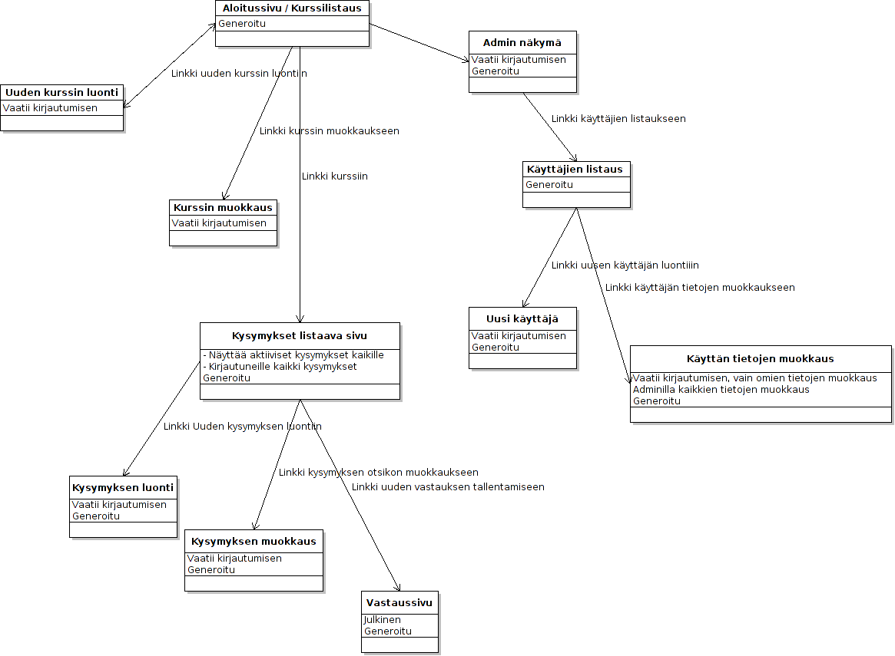

ToteutusDokumentti
Table of Contents
1 JOHDANTO (1)
1.1 Järjestelmän tarkoitus
Järjestelmän käyttötarkoituksena on toteuttaa esimerkiksi kurssikyselyitä, joihin tässä tapauksessa opiskelijat voivat nopeasti vastata, näin saadaan hyödyllistä tietoa esim. kurssin tehtävien vaikseustasosta. Tavoitteena on toteuttaa järjestelmä, jolla voi kyselyitä, joihin vastaamiseen ei mene yli minuuttia.
1.2 Toimintaympäristö
- Missä laite ja ohjelmistoympäristössä järjestelmän on tarkoitus toimia.
- Sovellus toimii RoR ympäristoissä, joissa tuotantotietokanta on postgresql ja kehitys tietokanta on sqlite3. Nämä on helppo muuttaa.
- Sovellus toimii myös suoraan herokuun deployattuna.
- Ainakin ruby 1.9.2-p290llä ja rails 3.2.2llä sovellus toimii moitteetta
1.3 Toteutusympäristö
- Ruby on rails kielellä ja deployaus herokuun.
2 OHJELMISTON RAKENNE (2)

3 JÄRJESTELMÄN KOMPONENTIT (3)
- assets
- images
- rails.png
Railsissa valmiina oleva kuva, perjaatteessa turha deployatussa sovelluksessa
- rails.png
- javascripts
Kontrollerikohtaiset javascript tiedostot, tyhjiä mutta rails luo ne valmiiksi
- admin.js.coffee
- answer_options.js.coffee
- answers.js.coffee
- application.js
- comments.js.coffee
- courses.js.coffee
- hoverIntent.js
- jquery-1.2.6.min.js
- jquery.bgiframe.min.js
- questions.js.coffee
- sessions.js.coffee
- superfish.js
- supersubs.js
- users.js.coffee
- admin.js.coffee
- stylesheets
Kontrollerikohtaiset css tiedostot
- admin.css.scss
- answer_options.css.scss
- answers.css.scss
- application.css
Kaikille tarkoitettu css tiedosto, johon koottuna käytännössa kaikkiin näkymiin vaikuttavat näkymät
- comments.css.scss
- courses.css.scss
- questions.css.scss
- scaffolds.css.scss
- sessions.css.scss
- users.css.scss
- admin.css.scss
- images
- controllers
Eri näkymien kontrollerit
- admin_controller.rb
Admin näkymän kontrolleri
- answer_options_controller.rb
Answer_optionssin kontrolleri, joka on tyhjä, mutta answerolioiden olemassaolon takia tarvitaan
- answers_controller.rb
Vastaus näkymän kontrolleri. Tarjoaa uuden vastauksen luonnin
- application_controller.rb
Koko sovelluksen yhteinen kontrolleri, jossa kirjautumiseen ohjaava pala, authorize -metodi
- comments_controller.rb
Kommenttien näyttämiseen liittyvä kontrolleri
- courses_controller.rb
Kurssi näkymän kontrolleri, uuden kurssin luonti, muokkaus ja poisto
- questions_controller.rb
Kysymysten kontrolleri, kysymyksen luonti, muokkaus, poisto
- sessions_controller.rb
Sessioiden kontrolleri, hoitaa autentikaation
- users_controller.rb
Käyttäjiin liittyvä kontrolleri, hoitaa käyttyäjien luonnin, muokkauksen ja poistamisen
- admin_controller.rb
- helpers
Helper luokkia, tyhjää täynnä. Rails luo ne jos niitä vaikka tarvitsisi
- admin_helper.rb
- answer_options_helper.rb
- answers_helper.rb
- application_helper.rb
- comments_helper.rb
- courses_helper.rb
- questions_helper.rb
- sessions_helper.rb
- users_helper.rb
- admin_helper.rb
- mailers
Jos lähettäisi sähköpostia, tulisi ne tänne. Tässä ohjelmassa tyhjä.
- models
Mallit, joiden perusteella rails rakentaa tietokantaan riippuvuuksia ja koodiin helpottavia asioita
- answer_option.rb
Kuvaa vastausvaihtoehtojen suhteita muihin tietokantaelemntteihin
- answer.rb
Kuvaa vastausten suhteita muihin tietokantaelemntteihin
- comment.rb
Kuvaa kurssien suhteita muihin tietokantaelemntteihin
- course.rb
Kuvaa kurssien suhteita muihin tietokantaelemntteihin
- question.rb
Kuvaa kysymysten suhteita muihin tietokantaelemntteihin
- user.rb
Kuvaa käyttäjien suhteita muihin tietokantaelemntteihin
- answer_option.rb
- views
Kaikki näkymät ovat generoituja. Kaikkien ulkoasuun vaikuttaa kontrollien tulokset
- admin
- index.html.erb
Adminin index näkymä, näyttää kurssien, kysyysten, kommenttejen, vastausten ja vastausvaihtoehtojen määrän tietokannassa
- answer_options
Kansio Answer_optionien olemassaolon takia
- index.html.erb
- answers
- new.html.erb
Uuden vastauksen Sis. answer_option id:n ja kommentin, jotka päätyvät vastaukseen
- show.html.erb
Kysymyksen vastausvaihtoehtojen listaus Ja linkki uuden vastauksen antamiseen. Sivu melko turha.
- new.html.erb
- comments
- index.html.erb
Kurssin yhden kykymyksen kommenttien listaus
- index.html.erb
- courses
- comments.html.erb
Kurssin kaikkien kommenttien listaus kurssikohtaisesti
- edit.html.erb
Kurssin nimen muokkaus, hyödyntää _form.html.erb tiedostoa
- _form.html.erb
Kurssin luonnissa käytetty formi, jossa vain kurssin nimelle kenttä
- index.html.erb
Näyttää listauksen kursseista ja linkin uuden kurssin luonti sivulle
- new.html.erb
Näyttää -form.html.erb tiedoston sisällön
- comments.html.erb
- layouts
- application.html.erb
Pohja, jonka ympärille sivu rakentuu. Renderöi navigaatiopalkin ja määritteleen css ja javascript tiedostojen käytän
- _navi.html.erb
Navigaationäkymä, joka ei enää ole käytössä
- application.html.erb
- questions
- activate.html.erb
Kysymyksen aktivointia varten oleva näkymä, joka on käytännössä tyhjä, sillä näkymän kontrollerin metodi redirectaa heti posi sivulta
- edit.html.erb
Turha näkymä, jota käytettiin aikanaan kysymyksen muokkaukseen.
- _form.html.erb
Näkymä, jolla luodaan uusi kysymys. Sisältää kysymyksen 'nimen' ja tässä vaiheessa 20kpl vastausvaihtoidoille tarkoitettua kenttää
- index.html.erb
Näkymä, joka listaa kaikki kysymykset. Jos käyttäjä ei kirjautnut listaa vain aktiiviset kysymykset
- new.html.erb
Näkymä joka näyttää _form.hml.erb tiedoston sisällön ja jolla luodaan uusi kysymys
- show.html.erb
Näyttää kysymyksen tuloksen, piirakkakaavion tuloksista ja kysymyksen kommentit (vain kirjautuneille)
- activate.html.erb
- sessions
- create.html.erb
Tyhjä railsin takia olemassa oleva näkymä, jota sisäänkirjautuminen vaatii
- destroy.html.erb
Logout näkymä, tuhoaa session ja kirjaa siten käyttäjän ulos
- new.html.erb
Kirjautumis ikkuna, Käyttäjänimelle kenttä, Salasanalle Sessions.rb modelissa on syötteiden tarkistus
- create.html.erb
- users
- edit.html.erb
Käyttäjän tietojen editointi, näyttää _form.html.erb tiedoston
- _form.html.erb
Käyttäjää luotaessa ja muokattaessa näytettävä tiedosto, sis Käyttäjänimen, salasana ja salasanan varmistus kentät. Users.rb model huolehtii salasanan hashaamisesta, ja syötteen oikeellisuudesta
- index.html.erb
Listaa käyttäjät
- makeAdmin.html.erb
Näkymä käyttäjän oikeuksien muokauksen takia. kukaan ei koskaan tule tätä näkemään
- new.html.erb
Näyttää _form.html.erb näkymän uuden käyttäjän luonnin takia
- show.html.erb
Näyttää käyttäjän tiedot, ja tiedon, onko käytttäjä admin.
- edit.html.erb
- admin
Date: 2012-05-04 02:11:55 EEST
HTML generated by org-mode 6.33x in emacs 23